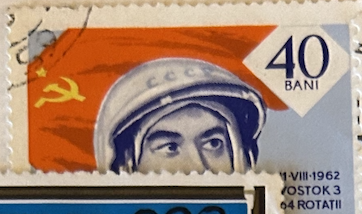
| SOURCE | TITLE| IMAGE MATCH | click to source page |
| Colnect | Stamp: Andrijan Nikolajev (Romania(Astronauts and Cosmonauts) Mi:RO 2242,Sn:RO C155,Yt:RO PA193,Sg:RO 3099,Rom:RO 576e 📮 | 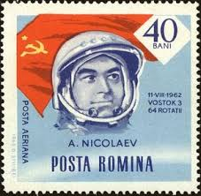 |
| Find Your Stamps Value | Value of posta aeriana stamps | 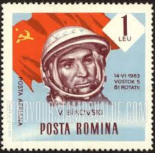 |
| HipStamp | Romania; 1964: Sc. # C152; Used CTO Single Stamp | Europe - Romania, Air Mail Stamp / HipStamp | 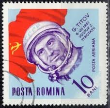 |
| allnumis.com | 40 Bani - Andrijan Nikolajev, 1964 - Romania - Stamp - 26670 | 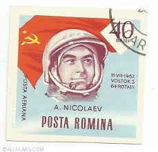 |
| Find Your Stamps Value | Value of posta aeriana bani 10 stamps | 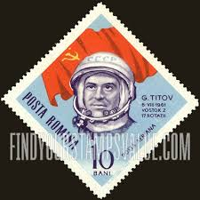 |
| Alamy | Postage stamp from Romania in the Post and telecommunications III series issued in 1974 Stock Photo - Alamy | 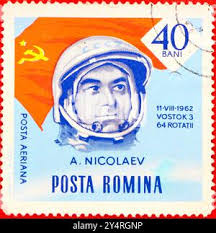 |
| Find Your Stamps Value | Value of posta porto 5 bani r p romina stamps | 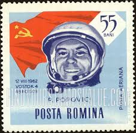 |
| sooluciones.com | Gherman Titov - Rumania 1964 - Catálogo de colección personal — Sellos para compartir o intercambiar | 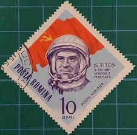 |
| Wikimedia.org | File:Timbru G. Titov.jpg - Wikimedia Commons | 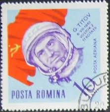 |
| Shutterstock | 11 Gherman S Titov Royalty-Free Images, Stock Photos & Pictures | Shutterstock | 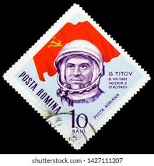 |
| 123RF | ROMANIA - CIRCA 1963: Stamp Printed In Romania Shows Astronaut, Gherman Titov, Circa 1963. Stock Photo, Picture and Royalty Free Image. Image 14144933. | 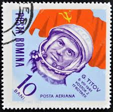 |
| Мешок | 785 Космос ГС Титов 1961» на Мешке #коллекция | 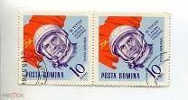 |
| Alamy | Yuri gagarin. soviet cosmonaut helmet hi-res stock photography and images - Alamy | 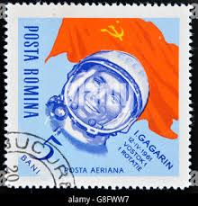 |
| eBay | Russia-2021 60th anniversary of German Titov flight into space (overprint) RARE! | eBay | 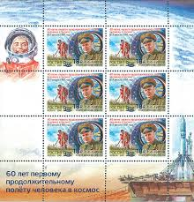 |
| eBay | Bulgaria 1961 MNH Mi 1279-1280 Sc C84-C85. Gherman Titov. Vostok 2 / Space ** | eBay | 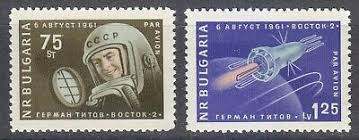 |
| DIY.org | Gherman Titov Facts For Kids | DIY.org | 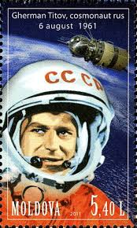 |
{kind=link}